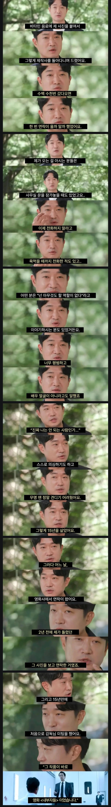

15년을 기다린 무명배우
댓글
평범한데 반대로 어떤 자리에도 들어맞는 천의 얼굴이지 ㅋㅋㅋ
미스터션샤인에서도 역관 역할 잘어울렸음 ㅋㅋㅋ
너무 평범하다는건 어떤 역할을 해도 잘어울릴 수 있다는 걸 수도
내부자들 조상무 / 수리남 변기태 / 미스터션샤인 임관수
기억나는건 이렇게 세 개인데 느낌이 다 다름
추가로 사마귀라는 ㅈ망 넷플 액션 영화있는데 거기서 사부역할로 액션하는것도 꽤 나쁘지않음 ㅋㅋ
도깨비
네~
변지타이!
이번에 타짜4에서도 존나 무리수역할인데도 나름 잘 소화해내는게 신기했음 ㅋㅋㅋㅋㅋ
내부자 볼 때..
어디서 수당 못 받을 야근 하는 삶의 찌든 부장님을 모셔다 영화를 찍었나 싶었다..
삶에 찌들긴 엄청나게 찌들었겠지 ㅋㅋ
근데 내부자들에 캐스팅이 실패했다면, 조우진은 아직도 무명생활 했을지도 모르잖아. 그렇게 연극생활만 전전하거나, 단역생활만 전전하다가 업종 돌리고, 방송,영화계와 담 쌓고, 또는 기획사에서 근무하고 그런 과거 배우들 수두룩 빽빽임. 모든 사람일에는 운이 절대적으로 필요함. 물론 현실은 열심히 살아야겠지만
ㅇㄱㄹㅇ
그냥 운이 좋은사람조차 저러는대 무명인 사람이 엄청나게 많을탠대
저거보고 난 해봐야지 같은 생각하면 솔직히 좀
근데 그 운도 실력이 있어서 잡은거니까
운도 필요하고.. 운과 더불어 그동안 갈고 닦은 실력이 빛을 발한거지
운칠기삼이 괜히 있는 말이 아니지
반대로 말하면 한끝차이로 조우진을 스쳐지나간 기회들도 많았을거라고 봄
모든 성공한 사업가들이 자기는 운이 좋았다라고 하는거랑 똑같다고 봄 성공에는 운이 따라줘야함
대신 노력은 기본으로 깔고가야함
조우진 배우도 사진붙은 음료수를 들고다니는 노력때문에 운을 잡은거니까
기회가 내려오는건 운임
그런데 기회가 왔을때 잡는건 실력임
조우진이 실력이 있으니까 된거지
독고할배
지성이면 감천
하늘은 스스로 돕는자를 돕는다
피그말리온
틀린말이 아니라고 생각함. 작용 반작용 같은거지..
어떤걸 바라고 행동하면 결과는 그쪽으로 기울어지리라 생각함
진짜 연기 개쩜. 믿고 보는 배우중 하나.
수리남 보고 남자 배우 펜카페를 처음 가입해봄. (활동은 안하지만)
하늘이돕는다 그러지만 하늘이 안도와줄수도있음
뭐라도 부업이 하나 있어야함
와
웬만한 사람은 안 하는게 맞다는 결론이지
소름돋았음ㄷㄷ
요하나 썰고
도깨비가 내부자 나오기 전이었남


김남희도 무명 길었는데 도깨비 때 의사 단역으로 떴다했지
뜬 다음에 둘 다 미스터 션샤인에서 만나서 더 떴구나
너무 흔한 얼굴인데
잔인한 소리를 덤덤하게 아니 더 임펙트가 있음
수리남에선 누가봐도 첩보원 아니게 생겼는데 첩보원이라서 반전에 그래 티가나면 첩보원이 아니겠다 싶었음 ㅋㅋ
와우..
진짜 얘는 나오는 곳에서 무슨 배역을해도 다 어울리더라
여썰고 아저씨하다가 수리남 조선족 아저씨하는데 ㄹㅇ 이질감이 안들음 ㅋㅋ연기 개잘함